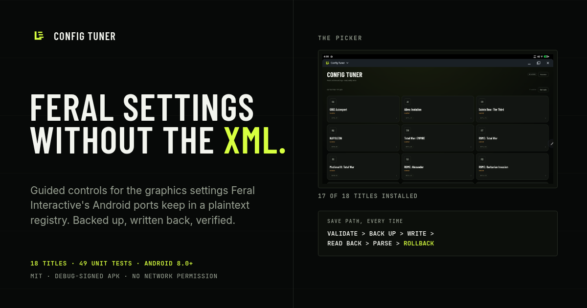

Brand kit · v1.3.2
The field instrument kit.
One lime mark, one condensed headline face and a dark instrument panel.
Everything here is meant to look like a tool someone uses, not a game someone markets.
The full kit is in docs/website/assets/brand/ and may be reused under MIT.
Logo
The mark is an L built from a stem, a foot and three signal bars — a literal reading of “legend” cut down to a settings panel. It is always lime on dark, or near-black on lime. It never gets a gradient, an outline, a shadow or a rotation.


Use it like this
- Keep clear space of at least half the mark's height on every side.
- Minimum size: 24 px on screen, 8 mm in print. Below that, drop the bars and keep the L.
- Place the lockup on the canvas or panel surfaces; place the mark alone in corners and favicons.
- Scale the wordmark proportionally with the mark — the lockup is already spaced.
Never
- Recolour it to anything other than lime on dark, or near-black on lime.
- Recreate the wordmark by typing “Config Tuner” next to the mark yourself — use the lockup.
- Put it on a photographic background, a game screenshot or another logo.
- Add effects: bevels, glows, long shadows, 3D, or a drop shadow to fake depth.
Colour
Dark, low-chroma surfaces; one lime signal for actions, numbers and state. Lime never carries body text or a paragraph — it marks, it does not talk. Red and amber appear only where something is refused or at risk.
Contrast
- Body copy sits at muted (7.4:1) or ink (18.2:1). Nothing readable goes below 4.5:1.
- Lime is for labels, numerals, rules and state — at 17.4:1 it is safe at any size.
- Amber and red always ship with a word, never colour alone.
- The app’s metadata dim is #5E675D; the website lifts small metadata to #7C857A for AA.
Surfaces
- No glassmorphism, no blurred translucent panels, no purple or blue neon.
- No gradients except a single low-opacity lime wash behind the hero.
- No pills or fully rounded buttons — radius stays between 2 and 8 px.
Type
Barlow Condensed does the shouting, Inter does the explaining, JetBrains Mono does the paths. All three are self-hosted, latin subset, OFL.
Headlines · uppercase
Feral settings without the XML.
clamp(32px, 4.2vw, 56px) · line-height .95 · letter-spacing .02em
Body · labels
Every Feral Android port keeps its real graphics settings in a plaintext registry that Android will not let you open. Config Tuner gives you readable controls for that file.
16px / 1.6 · max width 68ch · muted #98A092
Paths · keys · metadata
Android/data/<package>/files/feral_app_support/preferences
renderHeight 1080 · fullscreen 1
11–14px · letter-spacing .04–.12em · uppercase for labels
Assets
Every file in this kit is in the repo, unminified, and free to use under MIT. The social card is the one used by link previews.
| File | For | Notes |
|---|---|---|
| mark.svg | app icon source, header | 108 × 108, lime on transparent |
| lockup.svg | headers, readme, slides | mark + outlined wordmark, lime |
| wordmark.svg | text-only contexts | outlined — no font dependency |
| wordmark-on-light.svg | print, light docs | near-black outlines |
| favicon.svg | tabs, bookmarks | 32 px tile, lime ground |
| icon-192.png | PWA install | 192 × 192 PNG |
| icon-512.png | store listing, PWA | 512 × 512 PNG |
| icon-maskable-512.png | Android adaptive masks | full bleed, glyph in safe zone |
| apple-touch-icon.png | iOS home screen | 180 × 180 PNG |
| social-card.png | Open Graph / Twitter | 1200 × 630 PNG |



Voice
Technical, direct, a little dry. Short sentences. The reader is about to edit another app's file and knows it — so say what the app does, what it cannot do, and what it costs them.
Write like this
- “Guided controls over the game's own file” — not mods, not a trainer, not a cheat menu.
- Name the constraint: the game may rewrite settings on exit; the APK is debug-signed.
- Numbers only where they are checked: 19 titles, 50 unit tests, as of 1.3.2.
- Say “built by a non-developer with an AI coding agent” rather than inventing a company.
Never claim
- “All Feral games”, “every setting”, or support for versions not tested.
- “No root ever needed”, “Play Store”, “official”, or any affiliation with Feral Interactive.
- “Guaranteed safe on every device” — the app backs up and rolls back, it does not promise.
- Game artwork, logos or screenshots of the games themselves.